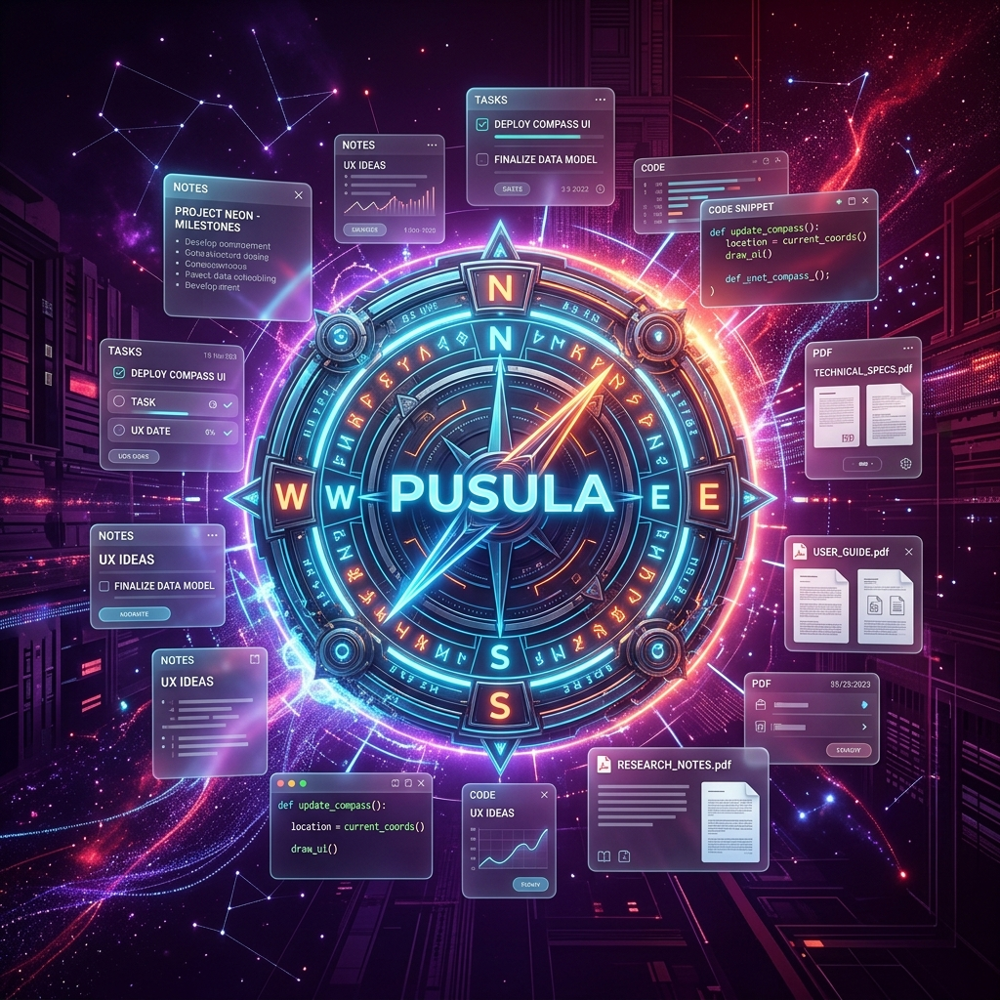

Bilgisayarınızın panosunu, dosyalarını ve Downloads klasörünü Rust-Native otomasyonu ile izleyin. Yakalanan bilgileri yapay zeka ile anında sınıflandırıp yerel kasanıza kaydedin.

Aşağıdaki hazır butonlara basarak veya kendi notunuzu yazarak Pusula'nın bilgileri arka planda nasıl anında yakalayıp önerdiğini deneyimleyin.
Pusula otomasyon havuzu şu an boş.
Soldan bir eylem tetikleyerek yakalamayı izleyin.
Bilgilerinizi tamamen izole edilmiş tematik alanlarda arşivleyin. Ders notları, sunumlar veya özel şifreler birbirine karışmasın.
Syllabus, vize/final slaytları, sınav kapsamları ve ders notlarını dağınık masaüstü klasörleri yerine ders bağlamıyla burada saklayın.
Grup ödevleri, dönem projeleri, sunum slaytları ve teslim notlarınızı projeleriniz altında düzenli tutun.
Ders kodları, terminal komut listeleri, lab föyleri ve veritabanı bağlantı komutlarını tek ekranda toplayın.
Okuma listeleri, kişisel notlar, hedefler ve planlama belgelerini diğer çalışma alanlarınızla karıştırmadan saklayın.
Arka planda kesintisiz çalışan Rust-Native modülleri, manuel giriş ihtiyacını tamamen ortadan kaldırır.
Tarayıcınızda veya belgenizde bir metni, linki veya kodu kopyaladığınız anda Pusula bunu algılar ve hemen onay kutunuza taşır.
İndirilenler (Downloads) klasörünüzü izler; indirdiğiniz PDF veya okul sunumlarını algılayarak arşive eklenmesini önerir.
Dosyaları doğrudan uygulamaya sürükleyin; vize, final veya ödev bağlamlarına göre akıllıca analiz edilip tasnif edilsin.
API anahtarları veya hassas komutlar haricindeki basit link ve ders notlarını, onay beklemeden doğrudan kasanıza kaydeder.
Pusula verileriniz hiçbir sunucuya yüklenmez, cihazınız dışına asla çıkmaz. Bilgilerinizin kontrolü her an tamamen sizdedir.
Tüm notlarınız, linkleriniz ve görevleriniz yerel diskinizde SQLite veritabanında saklanır. SQLCipher disk şifrelemesi yoldadır.
Kasa kilitlendiği anda SQLite veritabanı bağlantısı tamamen kesilir. Şifreniz hash ile doğrulanır.
Uygulamaya özel oluşturulan 24 kelimelik kurtarma anahtarı (Recovery Key) ile şifrenizi unutsanız dahi yerel verilerinize erişin.
Cihazlar arası veri transferleri AES-GCM ile şifrelenir ve yerel ağ üzerinden doğrudan cihazlarınız arasında aktarılır.
Aylık abonelikler veya gizli ücretler yok. Sadece tek seferlik ödeme ile ömür boyu sahip olun.
Pusula'nın gücünü keşfetmek ve temel düzeni kurmak isteyenler için.
Limit olmadan tamamen otomatik, akıllı ve senkronize bir düzen arayanlar için.
Pusula ile ilgili merak edilenleri, yerel güvenlik altyapısını ve otomasyon detaylarını inceleyin.
Yeni özellikler, yerel yapay zeka güncellemeleri ve erken indirim fırsatlarından ilk siz haberdar olun.